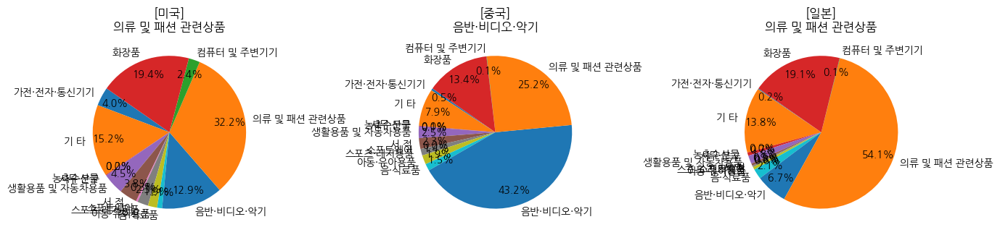
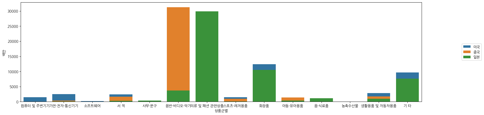

import pandas as pd
import numpy as np
import seaborn as sns
import koreanize_matplotlib
import matplotlib.pyplot as plt개요
KOSIS 지역별 / 상품군별 온라인쇼핑 해외직접판매액 데이터를 활용한 간단한 분석
KOSIS 상품군별 온라인쇼핑 해외직접판매액실습 기록용으로 남깁니다.
분석
데이터 불러오기
df = pd.read_csv('online_export.csv')#, encoding="cp949")df.head()| Unnamed: 0 | 국가(대륙)별 | 상품군별 | 판매유형별 | 시점 | 데이터 | |
|---|---|---|---|---|---|---|
| 0 | 0 | 미국 | 컴퓨터 및 주변기기 | 면세점 이외 | 2017.1/4 | 1054 |
| 1 | 1 | 미국 | 컴퓨터 및 주변기기 | 면세점 이외 | 2017.2/4 | 946 |
| 2 | 2 | 미국 | 컴퓨터 및 주변기기 | 면세점 이외 | 2017.3/4 | 791 |
| 3 | 3 | 미국 | 컴퓨터 및 주변기기 | 면세점 이외 | 2017.4/4 | 854 |
| 4 | 4 | 미국 | 컴퓨터 및 주변기기 | 면세점 이외 | 2018.1/4 | 2033 |
- 데이터 확인 중 시점 컬럼에 p가 붙어있어서 의미를 확인해봄
- KOSIS주석 : e: 추정치, p: 잠정치, -: 자료없음, …: 미상자료, x: 비밀보호, ▽: 시계열 불연속
df['시점'].unique()array(['2017.1/4', '2017.2/4', '2017.3/4', '2017.4/4', '2018.1/4',
'2018.2/4', '2018.3/4', '2018.4/4', '2019.1/4', '2019.2/4',
'2019.3/4', '2019.4/4', '2020.1/4', '2020.2/4', '2020.3/4',
'2020.4/4', '2021.1/4', '2021.2/4', '2021.3/4', '2021.4/4',
'2022.1/4', '2022.2/4 p)'], dtype=object)시점 데이터의 분류 (연도, 분기의 구분), 단위표기
df['연도'] = df['시점'].map(lambda x : x.split('.')[0])
df['분기'] = df['시점'].map(lambda x : x.split('.')[1].split('/')[0])
df[['연도','분기']] = df[['연도','분기']].astype(int)
df = df.rename(columns={'데이터':'백만'})
df| Unnamed: 0 | 국가(대륙)별 | 상품군별 | 판매유형별 | 시점 | 백만 | 연도 | 분기 | |
|---|---|---|---|---|---|---|---|---|
| 0 | 0 | 미국 | 컴퓨터 및 주변기기 | 면세점 이외 | 2017.1/4 | 1054 | 2017 | 1 |
| 1 | 1 | 미국 | 컴퓨터 및 주변기기 | 면세점 이외 | 2017.2/4 | 946 | 2017 | 2 |
| 2 | 2 | 미국 | 컴퓨터 및 주변기기 | 면세점 이외 | 2017.3/4 | 791 | 2017 | 3 |
| 3 | 3 | 미국 | 컴퓨터 및 주변기기 | 면세점 이외 | 2017.4/4 | 854 | 2017 | 4 |
| 4 | 4 | 미국 | 컴퓨터 및 주변기기 | 면세점 이외 | 2018.1/4 | 2033 | 2018 | 1 |
| ... | ... | ... | ... | ... | ... | ... | ... | ... |
| 2767 | 2767 | 기타 | 기 타 | 면세점 이외 | 2021.2/4 | 1278 | 2021 | 2 |
| 2768 | 2768 | 기타 | 기 타 | 면세점 이외 | 2021.3/4 | 1154 | 2021 | 3 |
| 2769 | 2769 | 기타 | 기 타 | 면세점 이외 | 2021.4/4 | 1076 | 2021 | 4 |
| 2770 | 2770 | 기타 | 기 타 | 면세점 이외 | 2022.1/4 | 2325 | 2022 | 1 |
| 2771 | 2771 | 기타 | 기 타 | 면세점 이외 | 2022.2/4 p) | 725 | 2022 | 2 |
2772 rows × 8 columns
데이터 자체에 대한 분석 (describe)
df.describe()| Unnamed: 0 | 백만 | 연도 | 분기 | |
|---|---|---|---|---|
| count | 2772.000000 | 2772.000000 | 2772.000000 | 2772.000000 |
| mean | 1385.500000 | 1613.116522 | 2019.272727 | 2.409091 |
| std | 800.351798 | 4273.426107 | 1.600909 | 1.114533 |
| min | 0.000000 | -10003.000000 | 2017.000000 | 1.000000 |
| 25% | 692.750000 | 41.750000 | 2018.000000 | 1.000000 |
| 50% | 1385.500000 | 291.500000 | 2019.000000 | 2.000000 |
| 75% | 2078.250000 | 1181.000000 | 2021.000000 | 3.000000 |
| max | 2771.000000 | 47689.000000 | 2022.000000 | 4.000000 |
- 특이하게도 최소값에 음수(-10003)이 있음
- 해외역직구와 같은 경향인가 추측해보았지만, 전체 국가/연도에서 단 1개값만 그렇다고 보기는 어려움
- 이상치로 보여 제거하고 분석을 진행하면 어떨까 싶음
국가별 판매액에 대한 heatmap을 통한 파악
sales_country = df.pivot_table(values='백만', index='국가(대륙)별', columns='연도', aggfunc='sum')
sns.heatmap(data=sales_country, annot=True, fmt='.0f', cmap='Blues')
- 미국, 일본, 중국의 판매액이 두드러짐
판매액 상위 3개국에 대한 판매액 추세 시각화
sns.lineplot(data=df[df['국가(대륙)별'].isin(['미국','중국','일본'])],
x='연도',y='백만',hue='국가(대륙)별', errorbar=None, estimator='sum'
)
plt.legend(bbox_to_anchor=(1.05,1), loc=2, borderaxespad=0) #bbox_to_anchor(그래프와의 관격, 위/아래 위치)- 2020, 2021년도 급격한 하락이 보임
- 당시의 큰 이벤트로는 코로나가 있으며, 해당 시기의 국가봉쇄/여객기 항편취소/화물기 감편 등이 원인일 것으로 보임
2020년 국가별 주요 상품군 분석
- 판매액 비중이 높은 주요 국가에 대해 분석 진행
df_2020 = df[df['연도']==2020].groupby(['국가(대륙)별','분기'])['백만'].sum().unstack().copy()
sns.heatmap(data=df_2020, annot=True, fmt='.0f', cmap='Blues')- 주요 3개국(미국, 일본, 중국)에 대한 제품군별 판매액 분석
filter_rule = (df['연도']==2020) & (df['국가(대륙)별'].isin(['미국','중국','일본']))
df_2020_top3 = df[filter_rule][['국가(대륙)별','상품군별','백만']]
# 잘 팔리는 상품군을 딕셔너리에 저장
best_category = {}
best2_category = {}
for i, country in enumerate(df_2020_top3['국가(대륙)별'].unique()):
filter_country = df_2020_top3['국가(대륙)별'] == country
globals()[country] = df_2020_top3[filter_country].groupby(['상품군별'])['백만'].sum().copy()
best_category[i] = globals()[country].sort_values(ascending=False).index[0]
best2_category[i]= globals()[country].sort_values(ascending=False).index[1]
#그래프 기본 틀
fig, axs = plt.subplots(ncols=3, figsize=(15,8), # ncols(그래프 수), figsize(공간크기)
gridspec_kw={'wspace':0.7},) #gridspec으로 그래프 사이 여백 설정
#그래프 그리기 (반복문으로 그래프를 그리고, 범례설정과 국가/1위카테고리를 입력한 제목 생성)
sub_title=[]
for i, country in enumerate(df_2020_top3['국가(대륙)별'].unique()):
globals()[country].plot(kind='pie',startangle=145, autopct='%.1f%%', ax=axs[i], pctdistance=0.8, #rotatelabels=True,
)
sub_title.append("["+country+"]")
axs[i].set_title(sub_title[i]+ chr(10) +best_category[i])
axs[i].set_ylabel('')
axs[i].labels=None
- 국가별 판매액 상위
- 미국 : 의류 및 패션관련상품
- 중국 : 음반 비디오 악기
- 일본 : 의류 및 패션관련 상품
- 4분기 판매가 두드러지는데, 특별히 비중이 많은 상품이 있는지 확인
filter_rule = (df['연도']==2020) & (df['국가(대륙)별'].isin(['미국','중국','일본'])) & (df['분기']==4)
df_2020_top3_quarter4 = df[filter_rule][['국가(대륙)별','상품군별','백만']]
# 잘 팔리는 상품군을 딕셔너리에 저장
best_category = {}
best2_category = {}
for i, country in enumerate(df_2020_top3_quarter4['국가(대륙)별'].unique()):
filter_country = df_2020_top3_quarter4['국가(대륙)별'] == country
globals()[country] = df_2020_top3_quarter4[filter_country].groupby(['상품군별'])['백만'].sum().copy()
best_category[i] = globals()[country].sort_values(ascending=False).index[0]
best2_category[i]= globals()[country].sort_values(ascending=False).index[1]
#그래프 기본 틀
fig, axs = plt.subplots(ncols=3, figsize=(15,8), # ncols(그래프 수), figsize(공간크기)
gridspec_kw={'wspace':0.7},) #gridspec으로 그래프 사이 여백 설정
#그래프 그리기 (반복문으로 그래프를 그리고, 범례설정과 국가/1위카테고리를 입력한 제목 생성)
sub_title=[]
for i, country in enumerate(df_2020_top3_quarter4['국가(대륙)별'].unique()):
globals()[country].plot(kind='pie',startangle=145, autopct='%.1f%%', ax=axs[i], pctdistance=0.8, #rotatelabels=True,
)
sub_title.append("["+country+"]")
axs[i].set_title(sub_title[i]+ chr(10) +best_category[i])
axs[i].set_ylabel('')
axs[i].labels=None- 4분기 국가별 판매액 상위 (변동없음)
- 미국 : 의류 및 패션관련상품
- 중국 : 음반 비디오 악기
- 일본 : 의류 및 패션관련 상품
- 비중이 아닌 상품군별 규모를 확인해봄
- 음반 비디오 악기가 가장 규모가 컸고, 다음으로 의류 및 패션관련 상품의 규모가 컸음
# 상위 3개국가에 대해 상품군별 시각화해서 분석함
plt.figure(figsize=(20,5))
sns.barplot(data=df_2020_top3, x='상품군별', y='백만', hue='국가(대륙)별', errorbar=None, dodge=False)
plt.legend(bbox_to_anchor=(1.1,0.5), loc=6, borderaxespad=0)
plt.show()
- 미국, 일본은 ‘의류 및 패션상품’ 판매가 두드러지므로 해외직구활성화 방안 등을 강구한다면 해당 업종을 눈여겨 봐야할 듯 함
- 두번째로는 ‘화장품’ 판매실적이 좋은데, 분류가 되어있지 않으니 기초/색조 여부 등을 보긴 해야겠지만
- 기초화장품 쪽 주력인 업체가 있다면 진출을 고민하는 등의 방향을 고민해보면 좋을 듯 하고
- 색조화장품 쪽 주력인 업체라면 해당 국가들의 미의 기준(선호색 등)을 파악하며 시작하면 좋을 듯 함
- 중국은 ‘음반 비디오 악기’ 판매 실적이 좋은데, 2020년이라면 한류가 원인 중 하나가 아닐까 싶음
- 간단히 구글링을 했을 때 ’한국구제문화교류진흥원’이란 곳의 보고서에 따르면 아래와 같은 상태 부분이 있음
- 20년 1월~7월의 한국 3대 엔터테인먼트들의 주가는 상승했고, 원인 중 하나가 글로벌 팬덤의 확대와 빌보드 차트 진입과 중국 현지화 전략의 순항이라 함 (물론 위에서 말한 원인은 구체적 자료를 제시한 내용은 아님)
- 중국판 미생의 방영 등 한류 자체는 긍정적인 상황으로 보임(물론 중국판 미생이 `18년 제작을 마쳤으니 위의 수치엔 영향 없을듯 함)
- 간단히 구글링을 했을 때 ’한국구제문화교류진흥원’이란 곳의 보고서에 따르면 아래와 같은 상태 부분이 있음
- 중국의 한류에 대한 내용검색을 위한 보고서였지만, 제조업(화장품)관련 보고서 내용도 있었는데,
- 화장품수출 강세는 색조화장품 뿐 아니라 기초화장품도 늘었다는 내용으로 보아 두 품목 모두 상승을 견인한 것으로 보임
- 의류 강세관련하여, ’팬데믹으로 의류산업은 고전’중이지만 ’마스크, 방호복 등 관련 수요 증가’라는 내용이 있어 의류품목 관련 판단은 좀 더 해보아야겠음
- 참고한 자료 : https://kofice.or.kr/b20industry/b20_industry_00_view.asp?seq=1134&tblID=gongji&clsID=0
판매액 상위국가에 대한 주요 상품 시각화
filter_rule2 = (df['국가(대륙)별'].isin(['미국','일본','중국']))&(df['상품군별'].isin(["의류 및 패션 관련상품", "화장품", "음반·비디오·악기"]))
df_top3_categorical = df[filter_rule2].copy()
fig, axs = plt.subplots(ncols=3, figsize=(15,4), # ncols(그래프 수), figsize(공간크기)
gridspec_kw={'wspace':0.3},) #gridspec으로 그래프 사이 여백 설정
ylabel_text = {0:'백만',1:'',2:''}
for i, country in enumerate(df_top3_categorical['국가(대륙)별'].unique()):
sns.lineplot(data=df_top3_categorical[df_top3_categorical['국가(대륙)별'] == country],
x='연도', y='백만', hue='상품군별', errorbar=None, marker='o', palette=["b", "r", 'g'], style='상품군별',
ax = axs[i])
axs[i].set_title('국가(대륙별) - ' + country)
axs[i].spines[['top','right']].set_visible(False) # 그래프 테두리 왼쪽,위,오른쪽 안보이게(false)
axs[i].legend().set_visible(False)
axs[i].set_ylabel(ylabel_text[i])
axs[2].legend(bbox_to_anchor=(2,1), loc=0, borderaxespad=4)의류 분야는 세 국가 모두 `21년을 기점으로 하락세
화장품은 미국/중국 하락세이나 일본이 크게 성장하여, `22년의 화장품 판매액은 일본의 영향이 크지 않을까 추측
음반은 `21~22년도에 중국에서 판매액 증가가 뚜렷
실제로도 확인해보니, `22년도 판매액은 일본의 비중이 컸음(하단 그래프)
plt.figure(figsize=(10,4))
sns.barplot(data=df[(df['연도'] == 2022) & (df['상품군별'] == '화장품')],
x='국가(대륙)별', y='백만', hue='상품군별', dodge=False)
plt.legend(bbox_to_anchor=(1.1,0.5), loc=6, borderaxespad=0) #bbox_to_anchor(그래프와의 관격, 위/아래 위치)
#loc(좌우), borderaxespad(클수록 아래로)추가과제
- 현재 분석과는 관계없지만, 함께 진행한 과제가 있어 기록만 해둠
# Choropleth 시각화
# 데이터 불러오기 & 가공(월 합계 등)
raw_data = pd.read_csv(
'국가별_수출입현황_20221119232639.csv',
encoding="cp949")
iso_table = pd.read_excel('iso_alpha.xlsx', engine='openpyxl')
iso_table = iso_table[['나라 이름','alpha-3']]
raw_data_saved = raw_data.copy()
raw_data_saved['2022년합계'] = raw_data_saved[raw_data_saved.columns[2:]].sum(axis=1)
# Pivot table(국가별 합계) - 합계 0은 제외 (시각화되어있지않으면 0으로 간주, 메모리도 더 절약될 것이라 생각)
pivoted = raw_data_saved.groupby(['국가별(1)'])[['2022년합계']].sum()
pivoted = pivoted[pivoted['2022년합계']!=0]
# replace로 국가명↔코드로 변환 (영문으로 변환되지 않은 국가['키리바티', '타지크' 등 생소한 국가]는 제외했습니다)
pivoted['iso_table']=pivoted.index
pivoted['국가명']=pivoted.index
pivoted['iso_table'] = pivoted['iso_table'].replace(iso_table['나라 이름'].tolist(),iso_table['alpha-3'].tolist())
pivoted['iso_table'] = pivoted['iso_table'][((pivoted['iso_table'].str.upper()) != (pivoted['iso_table'].str.lower()))]
pivoted| 2022년합계 | iso_table | 국가명 | |
|---|---|---|---|
| 국가별(1) | |||
| 가나 | 146268 | GHA | 가나 |
| 가봉 | -709661 | GAB | 가봉 |
| 가이아나 | 20358 | GUY | 가이아나 |
| 감비아 | -1354 | GMB | 감비아 |
| 건지 | 7 | NaN | 건지 |
| ... | ... | ... | ... |
| 필리핀 | 6247769 | PHL | 필리핀 |
| 허드 앤 맥도날드 군도 | -27 | NaN | 허드 앤 맥도날드 군도 |
| 헝가리 | 3696148 | HUN | 헝가리 |
| 호주 | -19871753 | AUS | 호주 |
| 홍콩 | 20619857 | HKG | 홍콩 |
244 rows × 3 columns
# plotly의 choropleth를 활용
# 지도위에 마우스를 올리면 국가명/iso code / 무역수지(백만단위)를 표현
import plotly.express as px
fig = px.choropleth(pivoted, locations="iso_table",
color="2022년합계",
hover_name="국가명",
color_continuous_scale=px.colors.sequential.Plasma,
title='2022년 국가별 무역수지 현황')
fig.show()Unable to display output for mime type(s): application/vnd.plotly.v1+json- Quarto rendring 문제로 출력 예시 이미지 첨부

Copyright © 2024 Kibok Park All rights reserved.